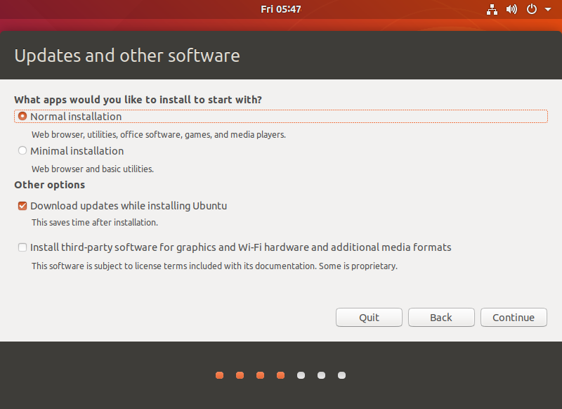
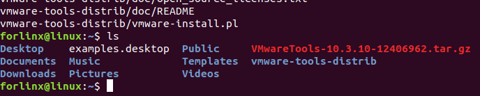
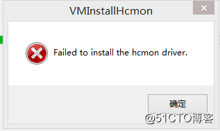
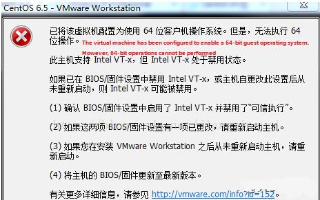

Linux4.9.170_User’s Compilation Manual_V1.2
Document classification: □ Top secret □ Secret □ Internal information ■ Open
Copyright
The copyright of this manual belongs to Baoding Folinx Embedded Technology Co., Ltd. Without the written permission of our company, no organizations or individuals have the right to copy, distribute, or reproduce any part of this manual in any form, and violators will be held legally responsible.
Forlinx adheres to copyrights of all graphics and texts used in all publications in original or license-free forms.
The drivers and utilities used for the components are subject to the copyrights of the respective manufacturers. The license conditions of the respective manufacturer are to be adhered to. Related license expenses for the operating system and applications should be calculated/declared separately by the related party or its representatives.
Application Scope
This software manual is applicable to theOKT507-C platform Linux4.9.170 operating system of Forlinx.
Revision History
Date |
User Manual Version |
Revision History |
|---|---|---|
05/06/2024 |
V1.0 |
SDK2.0 User’s Compilation Manual Initial Version |
20240619 |
V1.1 |
1. Replacing some pictures in the manual; |
09/07/2025 |
V1.2 |
Improving the source code and releasing part of the content. |
Overview
This manual is designed to enable you to quickly understand the compilation processof the products and familiarize yourselves with the compilation methods of Forlinx products. The application needs to be cross-compiled on an ubuntu host before it can run on the development board. By following the methods provided in the compilation manual and performing practical operations, you will be able to successfully compile your own software code.
The manual will provide instructions for setting up the environment but there may be some unforeseen issues during the environment setup process. For beginners, it is recommended to use the pre-configured development environment provided by us. This will allow you to quickly get started and reduce development time.
Linux systems are typically installed in three ways: dual system on a real machine, single system on a real machine, and virtual machine. Different installation methods have their advantages and disadvantages. This manual only provides methods to build ubuntu in a virtual machine.
Hardware Requirements: It is recommended to have at least 16GB memory or above. It allows for allocating a sufficient memory to the virtual machine (recommended to allocate 10GB or above), while still leaving enough resources for other operations on Windows. Insufficient memory allocation may result in slower performance on Windows.
The manual is mainly divided into five chapters:
Chapter 1. is about the installation of virtual machine software, providing a brief introduction to the download and installation of VMware software.
Chapter 2. offers the loading of the Ubuntu system;
Chapter 3. is about the setup, configuration and installation of necessary tools for the Ubuntu system, as well as common issues related to the development environment;
Chapter 4. is the data and compilation method required for the compilation of the source code of the product;
Chapter 5. is the configuration of QT compiling environment and the method of program compiling.
1. VMware Virtual Machine Software Installation
This chapter mainly introduces the installation of VMware virtual machines, using VMware Workstation 15 Pro v15.1.0 as an example to demonstrate the installation and configuration process of the operating system.
1.1 VMware Software Downloads and Purchase
Visit Vmware official website https://www.vmware.com/cn.html for downloading Workstation Pro and obtaining the product key. VMware is a paid software that requires purchasing, or you can choose to use a trial version.

After the download is complete, double-click the installation file to start the installation program.
1.2 VMware Software Installation
Double-click the startup program to enter the installation wizard.
Click on “Next”.
Check the terms in the license agreement that I accept, then click “Next”.
Modify the installation location to the partition where you want to install the software on your computer, then click “Next”.
Check and click on “Next”.
Check the box to add a shortcut, then click “Next”.
Click “Installation”.
Wait for the installation to complete.
Click “Finish” to try it out. If users need to use it for a long time, they need to buy it from the official and fill in the license.
2. Loading the Existing Ubuntu Development Environment
Note:
It is recommended for beginners to directly use the pre-built virtual machine environment provided by Forlinx, which already includes installed cross-compiler and Qt environment. After understanding this chapter, you can directly jump to the compilation chapter for further study；
The development environment provided for general users is: forlinx (username), forlinx (password). The superuser is: root (username), root (password).
There are two ways to use a virtual machine environment in VMware: one is to directly load an existing environment, and the other is to create a new environment.
First, download the development environment provided by Forlinx. In the development environment documentation, there should be an MD5 checksum file. After downloading the development environment, you should verify the integrity of the compressed package using the MD5 checksum. (You can use an on-line MD5 checksum tool or download a specific MD5 checksum tool for this purpose). To check if the checksum in the verification file matches the checksum of the file itself. If they match, the file download is successful. If they don’t match, it suggests that the file may be corrupt, and you should consider downloading it again.
Select all compressed files, right-click and extract to the current folder or your own directory:
After the extraction is complete, you will obtain the development environment OKT507-VM15.1.0-ubuntu18.04.
The file “t507development environment.vmx” in the OKT507-VM15.1.0-ubuntu18.04 folder is the file that you need to open to access the virtual machine.
Open the installed virtual machine.
Navigate to the directory where the recently extracted OKT507-VM15.1.0-ubuntu18.04 virtual machine file is located, and double-click on the startup file to open it.
Turn on this virtual machine after loading is complete to run it and enter the system’s interface.
The default login account for automatic login in the development environment is “forlinx”.
3. New Ubuntu Development Environment Setup
Note: Beginners are not recommended to set up a system on their own. It is recommended to use an existing virtual machine environment. If you do not need to set up the environment, you can skip this section.
This chapter mainly explains the process of setting up the Ubuntu system and installing Qt Creator. If the user is not using Qt, the installation of Qt Creator can be ignored.
3.1 Ubuntu System Setup
3.1.1 Ubuntu Virtual Machine Setup
Step 1: Open the VMware software and click [File]/ [New Virtual Machine]. Enter the following interface

Step 2: Select Custom and click “Next”.
Select the compatibility with the corresponding version of VMware, which can be found in Help->About VMware Workstation, and click “Next”.
Select Install the operating system later and click “Next”.
Keep the default settings and click “Next”.
Modify the name and installation location of your virtual machine, and click “Next”.
Configure the number of CPU based on your computer’s actual specifications.
Set the memory size according to your actual specifications. (For Linux kernel compilation, a memory size of 4GB is sufficient, while Android source code compilation requires higher memory requirements).
Set the network type, default to NAT mode then click “Next”. Keep the default values for the remaining steps until you reach the step to specify the disk capacity.
The default selection for the IO controller type here is LSI.
The default selection here is also SCSI.
Choose to create a new virtual disk here.
Set the disk size to 500G, select the disk provisioning format, and then click “Next”.
Specify the disk file, the default one here is fine
Click “Finish” by default.
The virtual machine creation is now complete.
3.1.2 System Installation
In the previous section, a virtual machine has been created, but the operating system hasn’t been installed yet, so the virtual machine cannot be started. Next, the Ubuntu operating system will be installed in the newly created virtual machine.
Step 1: Go to the Ubuntu official website to obtain the Ubuntu 18.04 image. The download address for Ubuntu 18.04 is:
https://www.ubuntu.com/download/desktop
The installed Ubuntu version is 18.04. One of the reasons for choosing 18.04 is that all the source code compilation operations have been compiled and verified on Ubuntu 18.04. There may be slight differences when performing these operations on different Ubuntu system versions.
Download address: http://releases.ubuntu.com/18.04/

Download “ubuntu-18.04.5-desktop-amd64.iso”
After downloading the mirror image, you can proceed with the system installation operation.
Right-click on the created virtual machine name and select “Settings” from the pop-up menu
The “Virtual Machine Settings” menu will pop up.
Click on CD/DVD (SATA), select “Use ISO image file,” browse and choose the previously downloaded Ubuntu image, then click “OK” to confirm.
After setting up the image, ensure that the network is available. Then, start the virtual machine and proceed with the installation of the Ubuntu image.

After starting the virtual machine, wait for the installation interface to appear as shown below.
After selecting the language on the left side as shown in the image, click “Install Ubuntu”, and the language selection interface will pop up. The default language of Ubuntu is English, but of course, you can also choose Others.

The default selected language can also be reset at a later stage, after the selection is complete continue.

Next, select “Continue” as the default option to proceed with the installation. The installation process might be slow. Then, click “Continue” again.

By default, when you click on “Install Now”, a dialog box will appear as shown in the image. Simply click “Continue” to proceed.

Next, select the timezone. You can either click on the Shanghai timezone or enter “Shanghai” (or choose the appropriate timezone based on your location). Then, click “Continue” to proceed. Finally, set your username and password. You can choose either automatic login or login with a username and password. Click “Continue” to start the automatic installation.
If the internet connection is poor, you can Skip without affecting the installation process.

Click “Restart” Now to reboot.


The system interface after the reboot is complete
The ubuntu system installation is complete.
3.1.3 Ubuntu Basic Configuration
After installing the Ubuntu 18.04 operating system, there are a few configurations to make.
VMware Tools Installation:
Next, install VMware Tools. Without installing this tool, you won’t be able to copy and paste and drag file between the Windows host and the virtual machine. First click on “Virtual Machine” on the VMware navigation bar, then click “Install VMware Tools” in the drop-down box.
Once done, enter Ubuntu and the VMware Tools CD will appear on your desktop and click into it

Enter and see a compressed file VMwareTools-10.3.10-12406962 (it may be different for different VM versions); copy the file under the home directory (i.e. the directory with the home personal username)

Press [Ctrl+Alt+T] to bring up the Terminal Command Interface and enter the command:
forlinx@ubuntu:~$ sudo tar xvf VMwareTools-10.3.10-12406962.tar.gz

After the extraction is complete, a file named “vmware-tools-distrib” will appear.

Go back to the terminal and type: cd vmware-tools-distrib to enter the directory.
Enter: sudo ./vmware-install.pl followed by pressing Enter. Then, enter your password and the installation process will begin. When prompted, you can input “yes” and press Enter to proceed. For any other inquiries, simply press Enter to go with the default installation settings.

Once the VMware tools is complete, we can implement file copy and paste between Windows and Ubuntu.
The virtual machine is displayed full screen:
If the virtual machine is not able to be displayed in full screen, you can resolve this issue by clicking on “View” and selecting “Autofit Guest.” This will adjust the display to fit the screen automatically, enabling you to have a full-screen experience in the virtual machine
Make most of the system settings in the location shown. A lot of the setup requirements on Ubuntu can be done here.
Virtual machine hibernation settings:
Also, the default hibernation is 5min, if you don’t want to set hibernation, just set it to Never by setting Power->Blank screen.
3.1.4 Network Settings for Virtual Machines
3.1.4.1 NAT Connection Method
By default, after the virtual machine is installed, the network connection method is set to NAT, which shares the host machine’s IP address. This configuration does not need to be changed when performing tasks like installing dependencies or compiling code.
When the VMware virtual NIC is set to NAT mode in a virtual machine, the network in the Ubuntu environment can be set to dynamic IP. In this mode the virtual NAT device and the host NIC are connected to communicate for Internet access. This is the most common way for our VM to access the external network.
3.1.4.2 Connections for Bridges
When the VMware virtual NIC device is in bridge mode, the host NIC and the virtual machine NIC communicate through the virtual bridge, and the network IP and the host need to be set in the same network segment in the Ubuntu environment. If accessing an external network, you need to set the DNS to be consistent with the host NIC. If TFTP, SFTP and other servers are used, the network contact mode of the virtual machine needs to be set as the bridge mode.
3.2 Toolkit Installation
Before compiling, execute the following commands to install the necessary toolkits.
forlinx@ubuntu:~$ sudo apt-get update
forlinx@ubuntu:~$ sudo apt-get install openssh-server vim git fakeroot
forlinx@ubuntu:~$ sudo apt-get install git-core gitk git-gui gcc-arm-linux-gnueabihf u-boot-tools device-tree-compiler gcc-aarch64-linux-gnu mtools parted libudev-dev libusb-1.0-0-dev python-linaro-image-tools linaro-image-tools autoconf autotools-dev libsigsegv2 m4 intltool libdrm-dev curl sed make binutils build-essential gcc g++ bash patch gzip bzip2 perl tar cpio python unzip rsync file bc wget libncurses5 libqt4-dev libglib2.0-dev libgtk2.0-dev libglade2-dev cvs git mercurial rsync openssh-client subversion asciidoc w3m dblatex graphviz python-matplotlib libssl-dev texinfo liblz4-tool genext2fs busybox
forlinx@ubuntu:~$ sudo dpkg --add-architecture i386
forlinx@ubuntu:~$ sudo apt-get update
forlinx@ubuntu:~$ sudo apt-get install libncurses5:i386 libstdc++6:i386 zlib1g:i386 libc6:i386
The above commands are required to compile directly using an Ubuntu virtual machine or Linux host.
3.3 Qt Creator Installation
Path: OKT507-C（Linux）User’s Manual\Linux\source code \qt-creator-opensource-linux-x86_64-4.7.0.zip
Extract qt-creator-opensource-linux-x86_64-4.7.0.run from qt-creator-opensource-linux-x86_64-4.7.0.zip and copy to the current user’s home directory and execute it:
forlinx@ubuntu:~$ ./qt-creator-opensource-linux-x86_64-4.7.0.run
The following screen will pop up, click “Next” to proceed to the next step:
In the following screen, register or log in to your account and click “Next” to proceed to the next step:
In the following screen, click “Next” to proceed to the next step:
In the following interface, click “Browse…” to select the installation path of Qtcreator, after the selection is complete, click “Next” to enter the next step:
In the following screen, check the first item and click “Next” to proceed to the next step:

Select the radio box “I have read and agree to the terms contained in the license agreement” button in the following screen, before clicking “Next”:
In the following screen, click “Install” to install Qt.
After the installation is complete, the following interface will be displayed, uncheck the option “Launch Qt Creator” and click “Finish” to complete the installation of Qtcreator:
Open the software to execute it:
forlinx@ubuntu:~$ cd /home/forlinx/qtcreator-4.7.0 /bin
forlinx@ubuntu:~$ ./qtcreator
3.4 Solutions to VMware Errors
Error 1: Unable to connect to MKS. Too many socket connection attempts; giving up.

Solution:
My Computer -> Right click -> Management -> Services and Applications -> Services: turn on all the services about

After the service starts successfully, restart the virtual machine; or hang the virtual machine first, and when the service starts, continue to run the hung virtual machine;
Error 2: Internal error
Solution: Refer to solution 1
Error 3: Unable to install service VMware Authorization Service (VMAuthdService)
Solution:
win+R
Enter services.msc
Then find the service and start it up as an authorization and authentication service for starting and accessing virtual machines.

WMI must be started first:

Error 4：Failed to install the hcmon driver

Solution: Delete C:\Windows\System32\drivers\hcmon.sys, then install again.
Error 5: Intel VT-x in disabled state

Solution:
①Enter the BIOS screen while booting (F2 or F12)
②configuration–》intel virtual technology–》–“change disabled to enabled–“save the setting, exit and reboot.
③Reopen VMware and turn on the virtual machine.
If that doesn’t work, just turn the firewall off and reopen the VM. (varies by machine)
Error 6: The virtual machine appears to be in use… Acquiring Ownership (T)

Solution:
①Shut down the virtual machine
② Enter the storage directory of the virtual machine and delete the *.lck file, where lck represents the locked file.
③ Open the Windows Task Manager and kill the VMware process

④Reopen the virtual machine
Error 7: Failed to lock file

Solution:
①Go to the virtual machine’s storage directory
②Delete.vmem.lck，.vmdk.lck，*.vmx.lck
③Reopen the VM, you can enter the VM normally
Error 8：The virtual machine could not be started because there was not enough memory available on the host.
Solution:
The virtual machine does not have enough memory to run the image’s maximum requirements； increase the virtual machine’s memory and reboot the virtual machine

4. Linux Compilation
Note: Please do not skip this paragraph.
The development environment is the hardware and software platform that developers need during the development process. Development environment is not a fixed style . In the previous article, it is explained in detail how to build an embedded Linux development environment. If you already know a lot about embedded development, you can build the environment according to your needs. If you encounter some problems, you can search for related information from some big Linux forums and websites to solve them. The operations mentioned in this section are performed on the development environment provided by us, which has been tested by Forlinx. If you are not very familiar with embedded development, we recommend you to use the environment provided by us. The development environment provided for general users is: forlinx (username), forlinx (password). The superuser is: root (username), root (password).
4.1 Preparation Before Compilation
4.1.1 Versions
Virtual Machine Software: Vmware 15.1.0
Recommended OS: Ubuntu 18.04 64-bit
Cross-toolchain: aarch64-linux-gnu
Bootloader version: u-boot-2018.05
Kernel version: linux-4.9
Development board QT version: qt5.12.5
4.1.2 Source Code Copy and Release
Kernel Source Code Path: User Profile\Linux\Source Code\OKT507-linux-sdk20.tar.bz2
1. Copy Source Code
Forlinx OKT507-linux-sdk.tar.bz2 includes toolchain, user sdk, Linux kernel, file system, test program source code and some tools etc.
forlinx@ubuntu:~$ mkdir /home/forlinx/work //Create working directory
Copy the source package to the/home/forlinx/work directory of the virtual machine
You can directly drag the source code package from your computer to the folder on the virtual machine’s desktop, or you can use commands to copy them using the shared folder feature. Here, the emphasis is on the use of shared folders.
There are many kinds of file transfers between ubuntu and Windows hosts. After installing VMware Tools, you can set up a virtual machine shared folder to mount the file directory of the Windows host to ubuntu for file sharing.
Click “Virtual Machine” in the menu bar and select “Settings”.
Click “Options”, enable “Shared Folders”, set the shared directory on the Windows host, and click “OK”.
After the file sharing setup of the virtual machine is complete, put the source package OKT507-linux-sdk.tar.bz2 into the shared folder of the Windows host；here we name it share.
The shared folder is in the mount directory /mnt/hgfs/share in ubuntu；view the files in the mount directory
forlinx@ubuntu:~$ ls /mnt/hgfs/share/ //Viwed the files in the shared directory
OKT507-linux-sdk20.tar.bz2
Copy the source code from the shared folder to ubuntu/home/forlinx/work.
forlinx@ubuntu:~$ sudo cp /mnt/hgfs/share/OKT507-linux-sdk20.tar.bz2 /home/forlinx/work/
[sudo] password for forlinx:
forlinx@ubuntu:~$ cd /home/forlinx/work
forlinx@ubuntu:~/work$ tar xvf OKT507-linux-sdk20.tar.bz2
If there are multiple packages in the data version you are using, please use the following command to extract them.
forlinx@ubuntu:~/work$ cat OKT507-linux-sdk20.tar.bz2.0* | tar jxv
2. Modification of file groups
When compiling using a regular account, you need to change the group ownership of the source code files to the current account.
forlinx@ubuntu:~/work/$ ls –l // View the attributes of the source code files
drwxr-xr-x 4 root root 4096 Apr 19 10:50 OKT507-linux-sdk
forlinx@ubuntu:~/work/$ id // View the ID of the current account
uid=1000(forlinx) gid=1000(forlinx) uid=1000(forlinx) gid=1000(forlinx) groups=1000(forlinx),4(adm),24(cdrom),27(sudo),30(dip),46(plugdev),116(lpadmin),126(sambashare),999(docker)
forlinx@ubuntu:~/work/$ sudo chown 1000:1000 -R OKT507-linux-source20 // Modify the file ownership and group
forlinx@ubuntu:~/work/$ ls -l
drwxr-xr-x 4 forlinx forlinx 4096 Apr 19 10:50 OKT507-linux-source20
4.1.3 Common File Paths for Source Code
OKT507-C platform, the software configuration file path (starting under the SDK source code OKT507-linux-sdk path) is as follows:
File |
Path |
|---|---|
Kernel configuration file |
kernel/linux-4.9/arch/arm64/configs/sun50iw9p1smp_longan_defconfig |
Device tree file |
kernel/linux-4.9/arch/arm64/boot/dts/sunxi/sun50iw9p1.dtsi |
kernel/linux-4.9/arch/arm64/boot/dts/sunxi/sun50iw9p1-pinctrl.dtsi |
|
kernel/linux-4.9/arch/arm64/boot/dts/sunxi/OKT507-C-Common.dtsi |
|
kernel/linux-4.9/arch/arm64/boot/dts/sunxi/OKT507-C-Linux.dts |
|
sysconfig.fex |
device/config/chips/t507/configs/okt507/sys_config.fex |
File system source files |
platform/framework/auto/rootfs/ |
Uboot environment variable setup file |
device/config/chips/t507/configs/okt507/longan/env.cfg |
Test program path |
platform/framework/auto/fltest_cmd_demo Command line test program source code directory |
4.2 Source Code Compilation
4.2.1 Full Compilation Test
Full compilation refers to the unified compilation of source code, including kernel source code, library files, applications, file system packaging, and so on.
First select the configuration:
forlinx@ubuntu:~$ cd /home/forlinx/work/OKT507-linux-sdk20 //Enter the source code path
forlinx@ubuntu:~/work/OKT507-linux-sdk20$ ./build.sh config //Execute the configuration command
Select 1 Linux, select 0 board model okt507, select 1 default
Run the compilation script for full compilation:
forlinx@ubuntu:~/work/OKT507-linux-sdk20$ ./build.sh
After the source code is compiled you need to generate an image to package the various files and configuration files generated by the compilation.
Execute the pack command to generate the image file:
forlinx@ubuntu:~/work/OKT507-linux-sdk20$ ./build.sh pack
Image file: out/t507_linux_okt507_uart0.img
4.2.2 Compiling Kernel Separately
Compiling the kernel separately only modifies the source code, affecting drivers and device trees, and is suitable for situations where only the kernel needs modification.
After selecting the configuration according to the previous method:
forlinx@ubuntu:~$ cd /home/forlinx/work/OKT507-linux-sdk20
forlinx@ubuntu:~/work/OKT507-linux-sdk20$ ./build.sh kernel //Execute compile kernel command
4.2.3 Compiling the Test Program Separately
When modifying the test program separately, you can compile only the test program to reduce the amount of compilation.
forlinx@ubuntu:~$ cd /home/forlinx/work/OKT507-linux-sdk20
forlinx@ubuntu:~/work/OKT507-linux-sdk20$ source .buildconfig //Configuration before compilation
Compile the command line test program:
forlinx@ubuntu:~/work/OKT507-linux-sdk20$ make -C platform/framework/auto/fltest_cmd_demo
Compile the QT test program:
forlinx@ubuntu:~/work/OKT507-linux-sdk20$ make -C platform/framework/auto/fltest_qt_demo
4.2.4 OKT507-LINUX-SDK20 Clean
This operation clears all intermediate files. However, it does not affect the source files, including those that have already had changes made to them.
forlinx@ubuntu:~$ cd /home/forlinx/work/OKT507-linux-sdk20
forlinx@ubuntu:~/work/OKT507-linux-sdk20$ ./build.sh clean //Execute the clean command
4.3 Qt Configuration and Use
Forlinx provides OKT507-LINUX-SDK20.tar.bz2, which includes Qt5.12.5 (a complete development dependency environment), our development environment has been installed Qt Creator4.7.0, users can also follow the previous method to build their own!
4.3.1 OKT507-LINUX-SDK20 Installation
Please refer to the previous article for SDK installation and full compilation first.
4.3.2 Qt Creator Environment Configuration
First open the Qt Creator software
Execute:
forlinx@ubuntu:~$ cd /home/forlinx/qtcreator-4.7.0/bin
forlinx@ubuntu:~/qtcreator-4.7.0/bin$ ./qtcreator
Start the Qt Creator program and click on the Tools->option:

Enter the Options interface, click “Kits” on the left side, then click the “Compilers” tab in the upper center, and click “Add->GCC->C++” on the right side, as shown in the figure:

Find “aarch64-linux-gnu-g++” under /home/forlinx/work/OKT507-linux-sdk/out/t507/okt507/longan/buildroot/host/bin/, select it, click Open, and change the Name to “ARM-G++”.
Follow the same method to add GCC compiler and click “Add->GCC->C” on the right side; as shown in the figure:
Find “aarch64-linux-gnu-gcc” in the directory /home/forlinx/work/OKT507-linux-sdk/out/t507/okt507/longan/buildroot/host/bin, then select it, click Open, and change the Name to “ARM-GCC”.
Click on the Qt Versions tab and click on “Add”:
In the directory /home/forlinx/work/OKT507-linux-release/OKT507-linux-sdk/out/t507/okt507/longan/buildroot/host/bin, locate qmake, select it, and then click Open. After adding it, the display should appear as follows. Click “Apply”.
Click on the Kits tab and click Add on the right to add a new Kits; modify the content according to the figure below and click “Apply”.
4.3.3 Qt Creator Development Examples
Open the Qt Creator software
forlinx@ubuntu:~$ cd /home/forlinx/qtcreator-4.7.0/bin
forlinx@ubuntu:~/qtcreator-4.7.0/bin$ ./qtcreator
Start the Qt Creator program, enter the qtcreator interface and click “New Project” to create a new project:
Select “Application”->”Qt Widgets Application”, then click “Choose” in the lower right corner:
In the following interface, change the name of the new project to “HelloWorld”, select the installation path /home/forlinx, and then click “Next”:
In the following screen, select “OKT507” as the kit of the current project, and then click “Next”:
In the following interface, change the “Class Name” to “HelloWorld”, select the “Base class” as Qwidget, and then click “Next”:
In the following interface, click “Finish” to complete the new project:
When the creation of the new project is complete, the following window can be displayed:
When the program is written, click the hammer icon in the lower left corner to cross-compile and copy the compiled executable program HelloWorld to the development board to test the application. The path to the executable file is as follows: